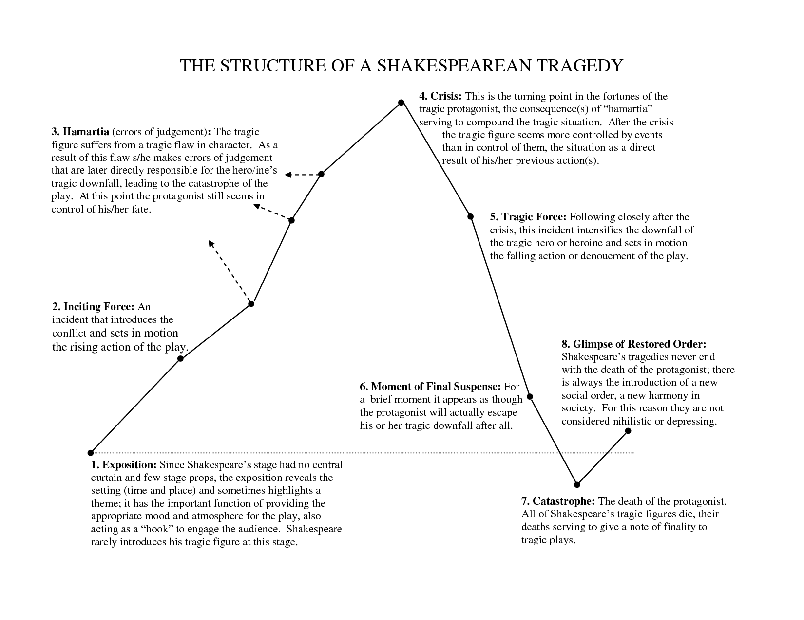
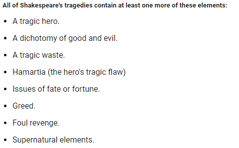

This project was done in collaboration with a learning machine. By feeding the software (RunwayML G2) the source material which consisted of around 30 Shakespearean tragedies and then prompting it certain famous lines, it brought the story to where it is by predicting the following dialogue. Although, it would not be clear as to what the story is if it weren't for my editing and slight manipulation of the text. I swapped through many renditions of lines, most of which did not make it into the final cut for a multitude of reasons. Some were nonsensical, and many simply weren't the tone or storyline I wanted to go with. So in a sense, the AI was bringing up ways we could present the story and I simply approved or denied it. It was a long process which eerily felt a lot like how I imagine working with real writers would be. The story tells of an unrighteous king, who abuses his power for selfish endeavors. The semi-final act depicts the starvation on the city's working class, as well as the turning point for the king's daughter whom he presumably abused terribly in previous acts of the play. The king is overthrown by a secret alliance consisting of the guard, the church, and the citizens (each of which have leaders by the names Bennox, Cassius, and Percylania respectively), all of whom fight with each other as to who will lead next. I have not completed the story, but presumably the final act results in almost every character dying, as is fitting for a tragedy. The king is murdered in Act II, the alliance finds ways to kill each other off in an attempt to retrieve the throne, and the daughter takes her own life. There are no happy endings, but in the end the city of Bizarro-World Rome did not die off because of starvation. Instead, it died of greed.   This story followed many themes consistent between Shakespearean tragedies including a tragic hero (well, three of them), a dichotomy of good and evil (the city vs the king), a tragic waste (the inevitable death of the city regardless of efforts, and the daughter), the hero's tragic flaw (each wanted something different from the thone and wanted to take it for themselves), issues of fate or fortune (wealth of the king), greed (use of wealth for indulgences), foul revenge (Murder). The only thing missing is the inclusion of supernatural elements such as witches or faires or the like. Now, if I write more of the other acts and not just the conclusion, perhaps we'll stumble upon some of that nature. Source: Prompts used: To be, or not to be: that is the question. Shall I compare thee to a summer’s day? Thou art more lovely and more temperate.’ Passage: The Tragedy of Bennox, the Unworthy King BENNOX. - Spokesman of the Guard - Follower to Percy CASSIUS. - Spokesman of the Church - Intellectual - Cynical PERCYLANIA. - Spokesman of the Working Class BRUTUCE. - King of Rome - Father of Lucidius - Fueled by greed and desire LUCIDIUS. - Daughter (princess of Rome) - Tainted purity Setting: Alternate Universe Rome ACT II SCENE V. BENNOX. To be, or not to be: that is the question. Therefore, and therefore again. PERCYLVANIA. Let me have power: sir, the crown will be gone, And, when it is done, my freedom will vanish. The crowns he bears, Should have his crown upphire The glory of you. BENNOX. Sir, we shall follow you At this banquet. PERCYLVANIA. So, good gentlemen, farewell. So, let us meet at the palace At once. Farewell, gentlemen. CASSIUS. O my goodness, if I win my daughest nobleship, And do so, my fate shall well be ended By your kingly patronage. PERCYLVANIA. Alas, gentlemen. I'll gladly give it away. CASSIUS. Gaining power is to starve the people In dangerous terms, be gentle to death; To keep our strengths pure; thus shall not come out But in thy ban’shment: where will your head lay? Who will delight you with leisure t’morrow Of slav’ry’s rich buildings? Where will you dwell? Afraid of your cruel’ty? Where shall you dwell? What sport will you trowle in within your life? Don’t feed envy of immoral contempt, Guiltless rage, yet rest a body that feeds Or try to ward away your lands from spears? Or will you wake with great and loving cause? With grief of man’s sorrows living in you To make way with your rich linen and robes Stripped off from the seat of thy sleeping throne To drown your infantile nobleman groans? Or would you stay in your twisted palace? Follow the precious cheek of occasion That might freely assail our liberties? PERCYLVANIA. ’Tis true; that means I know my sorrows Should touch them. But that mother’s fair tenderness’s nature Plows down her harmless fretting shadows. I shall tender her thine. Exeunt. ACT II SCENE VI. Rome. A Room where she lies Enter Lucidius and her father. BRUTUCE. And so thou art born, and now take a look at thee; For thou wast born to crave me much, And here a look about thee here, and tho’ earth Upon the bottom of my well-fed pasture Laid asleep till methinks thou canst give her A modest vantage with a golden cedar: thou know’st not ’Tis false, but thou shalt know ’Tis true LUCIDIUS. If thou couldst be so true. BRUTUS. Say thou couldst, And for thy father gave me his diet; Thou lov’st thy bosom, Thou woul’st me ever. Yet, love me thee; I’ll tell thee, love’st me for thee. I’ll tell thee, love thee I am troubled when I do crave thee again. LUCIDIUS. If thou couldst, And yet, in thy weeping meditation, Lay thee maimed and tormented, And made my weary body so lean That me had on my bosom’s neck as I would want thee. BRUTUS. If thou coug’st thyself down, And mock’st thou on my bosom, O wretched woman, in thy cheeks thou dost live. LUCIDIUS. If thou couldst, I’d command thee but to myself, To sicken the state of your wildness. BRUTUS. What news thou. BRUTUS. Shall I compare thee to a summer’s day? Thou art more lovely and more temperate. LUCIDIUS. Why, your Grace hath pale’d not to the wind. Thou hast appeas’d me not, I love thee better than I do a toad. If thou beget any feeling, Not to this day, that thou must not wilt bathe in summer If to sell of me all; for thou cannot want tanned flesh, Let me not to doubt; for thou havest beaten my natuities In fair thy beauty, in thy untimely ear, My hair parted fronds with hounds of tears, That I would put in this tedious tent Why bade thee long. LUCIDIUS. You bred your sweet creature; For thy only daughter did yet make a loving slumber. BRUTUS. Are you still angry with me, grudging at me? If you durst not lye your head a thousand times, Or confine you to thine own knot, Or lay the very essence upon thy own finger Enter Percylvania. PERCYLVANIA. A faire tongue, are you so willing to hate it? If it be, I will wipe it from my face. My blessed land Beneath thee speak’d, wretch, And even with thy heart, no wine may deserge. BRUTUS. How fares thy lady? You’ll soon encounter a love? Do not talk of my daughter again; For one doth talk with her beauty, For you are too farne away. PERCYLVANIA. When I am beseech you to ask for mercy, If she say I wilt not believe thee, If she tell me what thou cannot tell. LUCIDIUS. I speak not to thee; for I cannot believe thou, Though if I pretend thou am an imperfect father, I do know not to be thou’st true. For even as thy own child is the dearest Thy head shall tell me thy sight to be painted: That the very imaginations of thy daughter Must prove my view too poor, my right, That she is the wrong. BRUTUS. Thy are most out of self-discipline. PERCYLVANIA. It comes from a truth, And so from a view which I have to confess. BRUTUS. To me this is a lie. PERCYLVANIA. Pray you, For at once I am a traitor. PERCYLVANIA. My blade doth sink. harms. BRUTUS. Thou hast sinned and denied life. I saw thee. PERCYLVANIA. Thou art indeed cruel in so long's absence. I saw thee, as I now am. You saw yourself. Thou art not only cruel, but hideous, And vile in so great an hour's sight. LUCIDIUS. Gods, mighty gods! How could thou slay our majesty. I thought thoust could think. Why, to thy danger! That thou didst not come to touch death. Be you so? LUCIDIUS. Wouldst thou, to mine wicked-tempered so? Why, to thy wronging beauty. Farewell, none so come in such a uteous-profane manner, For thou have I not pity'd them all. Thou art not a fool. LUCIDIUS. Then with your liking and honesty, Thou art a fool. O, gentle princess. PERCYLVANIA. Thou art free. LUCIDIUS. Thou art too cruel to say that. I have nothing left to say to you yet. Therefore bear the wits with you. Farewell. [_Exeunt._]